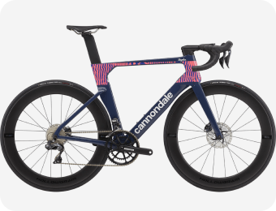
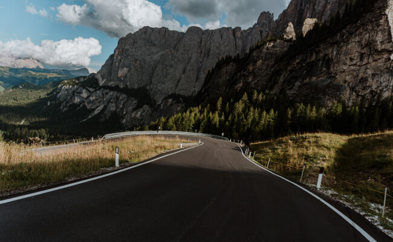

Шоссе, ТТ и Грэвел
Триатлонные старты, горные серпантины или грейвел заезды по живописным маршрутам – нужно только определиться с выбором велосипеда и отправиться в путь.
Cannondale Systemsix



«Катайся много или мало, долго или коротко, как хочешь - но катайся»
Велогонщик
Шоссе


Грэвел

ТТ